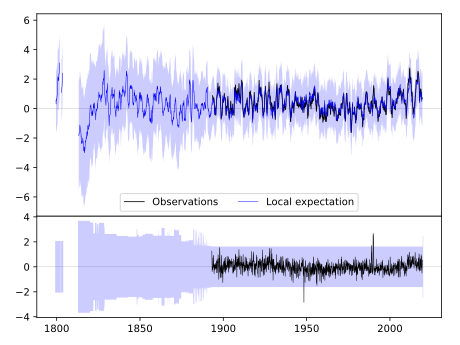
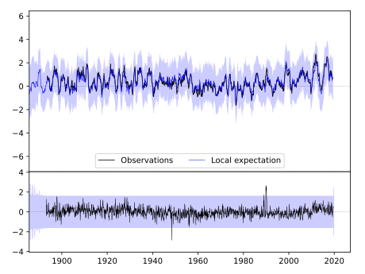
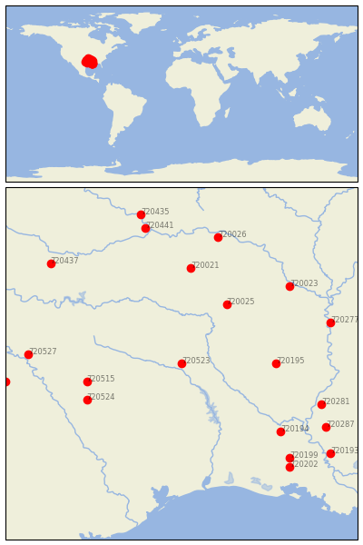

MARSHALL [USA]


| Neighbour | Name | Country | Distance | Lon/Lat | Years |
|---|
| 720523 | MARSHALL | USA | 0 | -94.4, 32.5 | 1893-2019 |
| 720025 | PRESCOTT 2 NNW | USA | 171 | -93.4, 33.8 | 1882-2019 |
| 720195 | CALHOUN RSCH STN | USA | 196 | -92.3, 32.5 | 1888-2019 |
| 720515 | CORSICANA | USA | 202 | -96.5, 32.1 | 1874-2019 |
| 720524 | MEXIA | USA | 216 | -96.5, 31.7 | 1888-2019 |
| 720021 | MENA | USA | 234 | -94.2, 34.6 | 1889-2019 |
| 720194 | BUNKIE | USA | 266 | -92.2, 31.0 | 1882-2019 |
| 720023 | PINE BLUFF | USA | 292 | -92.0, 34.2 | 1883-2019 |
| 720281 | NATCHEZ | USA | 308 | -91.3, 31.6 | 1799-2019 |
| 720527 | WEATHERFORD | USA | 319 | -97.8, 32.7 | 1893-2019 |
| 720026 | SUBIACO | USA | 319 | -93.6, 35.3 | 1884-2019 |
| 720277 | GREENVILLE | USA | 323 | -91.1, 33.4 | 1884-2019 |
| 720199 | GRAND COTEAU | USA | 326 | -92.0, 30.4 | 1888-2019 |
| 720287 | WOODVILLE 4 ESE | USA | 340 | -91.2, 31.1 | 1892-2019 |
| 720441 | WEBBERS FALLS 5 WSW | USA | 341 | -95.2, 35.5 | 1892-2019 |
| 720202 | LAFAYETTE FCWOS | USA | 342 | -92.0, 30.2 | 1884-2019 |
| 720437 | PAULS VALLEY 4 WSW | USA | 363 | -97.3, 34.7 | 1892-2019 |
| 720516 | DUBLIN 2SE | USA | 369 | -98.3, 32.1 | 1893-2019 |
| 720435 | MUSKOGEE | USA | 376 | -95.3, 35.8 | 1892-2019 |
| 720193 | BATON ROUGE METRO AP | USA | 383 | -91.1, 30.5 | 1822-2019 |